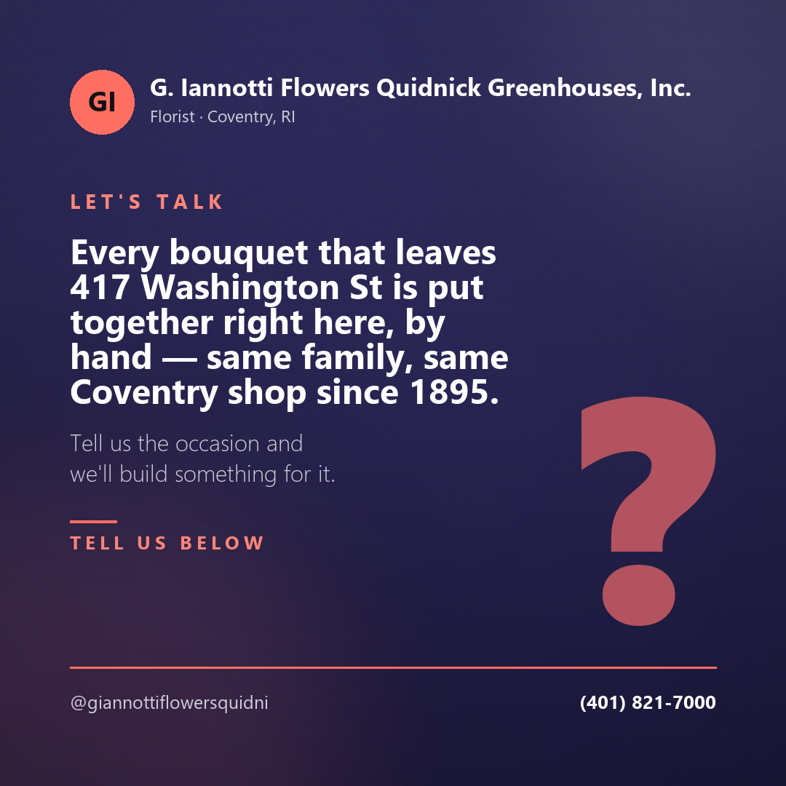

photo · Instagram
Every bouquet that leaves 417 Washington St is put together right here, by hand — same family, same Coventry shop since 1895. Tell us the occasion and we'll build something for it.
G. Iannotti Flowers Quidnick Greenhouses arranges every bouquet in house. Bouquets are arranged in house on Washington Street and delivered locally — for the good days and the hard ones.
Flowers get sent on the best days of a life and on the worst ones. We handle both out of the same shop, and both get the same attention.
Weddings and the ordinary occasions that deserve something anyway.
When the order is a difficult one, tell us and we will take it from there.
There is a large inventory of fresh flowers for any occasion in the shop, and a good deal that never goes in a vase at all.
Every bouquet is made in house and delivered by the shop, so the flowers that arrive are the flowers that were arranged here.
Tell us the occasion, the budget and where it is going, and we will build something for it. Custom arrangements and gift baskets welcome.
(401) 821-7000Content